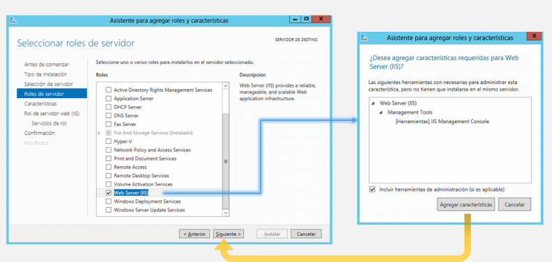
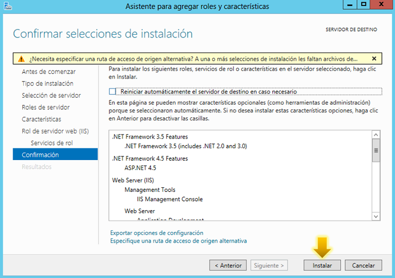

IIS (Internet Information Server, por sus siglas en inglés) es un servidor web extensible que provee un conjunto de servicios para sistemas operativos Windows. Esta característica permite convertir su máquina en un servidor web para poder publicar su sitio web en el Internet —o en una red interna—. Este servicio convierte un PC en un servidor web para Internet o para una intranet, es decir que en los ordenadores que tienen este servicio instalado se pueden publicar páginas web tanto local como remotamente.
IIS ofrece soporte para los siguientes protocolos: HTTP, HTTPS, FTP, FTPS, SMTP y NNTP. Además provee características como: múltiples mecanismos de autenticación, una arquitectura modular que permite una gestión organizada y completa de las funciones adicionales, elementos de seguridad avanzada y optimizaciones de rendimiento.
Para el año 2016, IIS de Microsoft se ha mantenido como el servidor web más utilizado a nivel mundial. De acuerdo con el último análisis de Netcraft en el año 2016, la participación de mercado de Microsoft ha ido en constante crecimiento desde el segundo trimestre de 2016, manteniéndolo como el primer servidor web en términos generales, tomando en cuenta el total de la muestra de los sitios web publicados en la web.
Sin embargo, cuando se evalúa la participación de mercado sobre las muestras de sitios web más activos, Apache y Nginx siguen en el tope estadístico mientras que IIS tiene una participación de alrededor del 10%.
Si su aplicación web utiliza ASP.NET en versiones desde la 2 hasta la 3.5 debe instalar dicho framework en su versión 3.5 antes de activar el módulo de IIS y el propio módulo de ASP.NET. Para hacerlo siga el siguiente procedimiento:
1.-Inicie sesión en su servidor a través del acceso noVNC o conexión de escritorio remoto.
2.-Dirija el cursor a la parte superior derecha de la pantalla y haga clic sobre el ícono de búsqueda. Luego escriba cmd y haga clic derecho sobre el ícono que aparecerá en la parte izquierda. Luego seleccione Ejecutar como Administrador (Run as Administrator) en la barra inferior:
3.-Copie y ejecute el siguiente comando en la aplicación de línea de comandos:

4.-Espere hasta que se complete el proceso (que puede durar varios minutos) y luego cierre el cmd.
Para habilitar los módulos de los servicios siga los pasos:
1.-Una vez en el servidor, coloque el cursor en la esquina superior derecha de la pantalla y luego haga clic en Inicio (ícono de Windows).
También puede presionar la tecla de Windows en el teclado si accede vía Escritorio Remoto. Luego abra el Administrador del servidor (Server Manager):

2.-Desde la sección "Panel" (Dashboard) haga clic en la opción Agregar roles y características (Add roles and features):
3.-Se abrirá el "Asistente para agregar roles y características". Puede obviar la primera página de (Antes de comenzar) haciendo clic en Siguiente:
4.-En la página Tipo de instalación seleccione la opción Instalación basada en características o en roles (Role-based or feature-based installation) y luego presione Siguiente.
5.-En la página de Selección del servidor, seleccione el servidor en el cual desea activar IIS de la lista de opciones y haga clic en Siguiente.
6.-En la página Roles del servidor busque la opción Web Server (IIS) y haga clic sobre esta. Aparecerá un mensaje en el cual debe presionar Agregar características (Add features). Luego observará un checkmark en la opción seleccionada, cuando esto ocurra podrá hacer clic en Siguiente:
7.-En la página Características puede hacer clic en Siguiente sin seleccionar ninguna opción adicional.
8.-En la página "Rol del servidor web (IIS)" también puede presionar Siguiente.
9.-La configuración de la siguiente página ("Servicios del rol") dependerá de las características que desee agregar a su servidor. Puede dejar los servicios predeterminados si no está seguro, de lo contrario personalice las características según los requerimientos de su plataforma web. Expanda la categoría Application Development y seleccione la casilla ASP.NET 4.5 (si siguió la primera sección de este tutorial para instalar .NET 3.5 también debe seleccionar la casilla ASP.NET 3.5):
10.-En la última página podrá confirmar todos los elementos correspondientes a la configuración dispuesta anteriormente. Verifique si todo es correcto y presione Instalar:
11.-El proceso de instalación durará varios minutos. Si la instalación es correcta verá la barra de progreso completa y un mensaje indicando Instalación exitosa (Installation succeeded):
Puede realizar una prueba sencilla para comprobar que la instalación fue exitosa y que el servicio IIS se encuentra activo:
1.-Dentro del servidor, abra el explorador de su preferencia y escriba lo siguiente en la barra de direcciones:

Si la instalación es correcta, se mostrará la página principal de Microsoft IIS.
2.-Es importante que también pueda abrir desde su computador local, así sabrá si el servidor web está disponible en la red. Para hacerlo simplemente utilice:

En el cual la dirección 123.45.67.89 corresponderá a la dirección IP pública del servidor.
Aquí un ejemplo de lo que debería ver si todo fue correcto:
Una vez que hayamos completado nuestra instalación de IIS, debemos alojar el sitio web en cuestión para que funcione con dicho servicio. Si no tiene un sitio web, puede utilizar el siguiente código HTML y guardar el archivo en su ubicación de preferencia. En este ejemplo se guardará en la ruta C:\Website\index.html:

Usaremos en este ejemplo el archivo de prueba, sin embargo, puede utilizar el enlace a su sitio web si el mismo ya está en desarrollo.
1.-Vuelva a abrir el Administrador del servidor. En el menú de la parte superior derecha, seleccione la opción "Herramientas" (Tools) y haga clic en Administrador de Internet Information Services (IIS):
2.-Despliegue las opciones del servidor y haga clic en la pestaña Sitios. Podrá observar que el sitio activo es el sitio predeterminado de IIS. Haga clic en Agregar sitio web en la lista de opciones de la parte derecha:
3.-Indique el nombre del sitio web, especifique la ruta en la cual posee los archivos de su sitio web y haga clic en Aceptar:

4.-Para evitar errores, seleccione el sitio web predeterminado (Default) y haga clic en Detener.
5.-Ahora podrá acceder a su sitio web en cualquier computador usando el nombre de dominio (si este está apuntando a dicha dirección IP) o la dirección IP del servidor. También podrá acceder desde el propio Windows Server usando la dirección http://localhost: